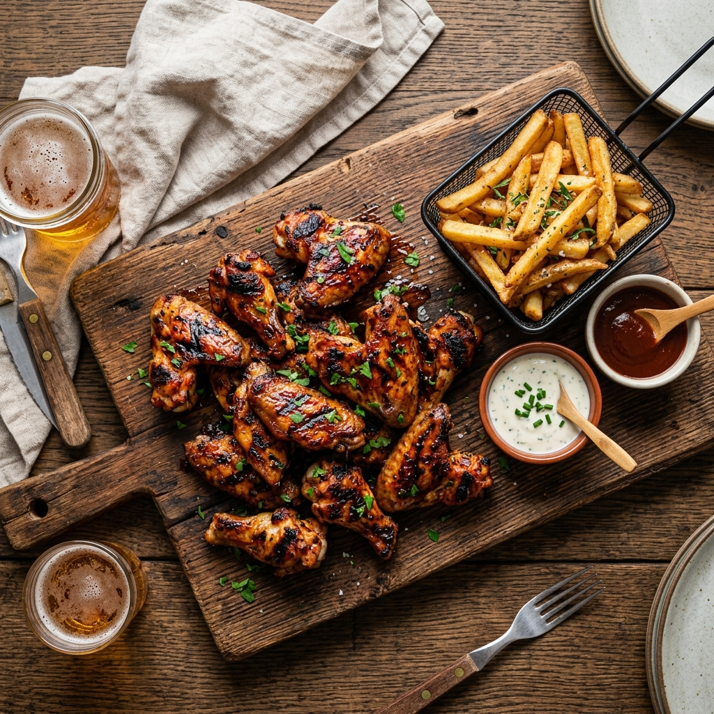
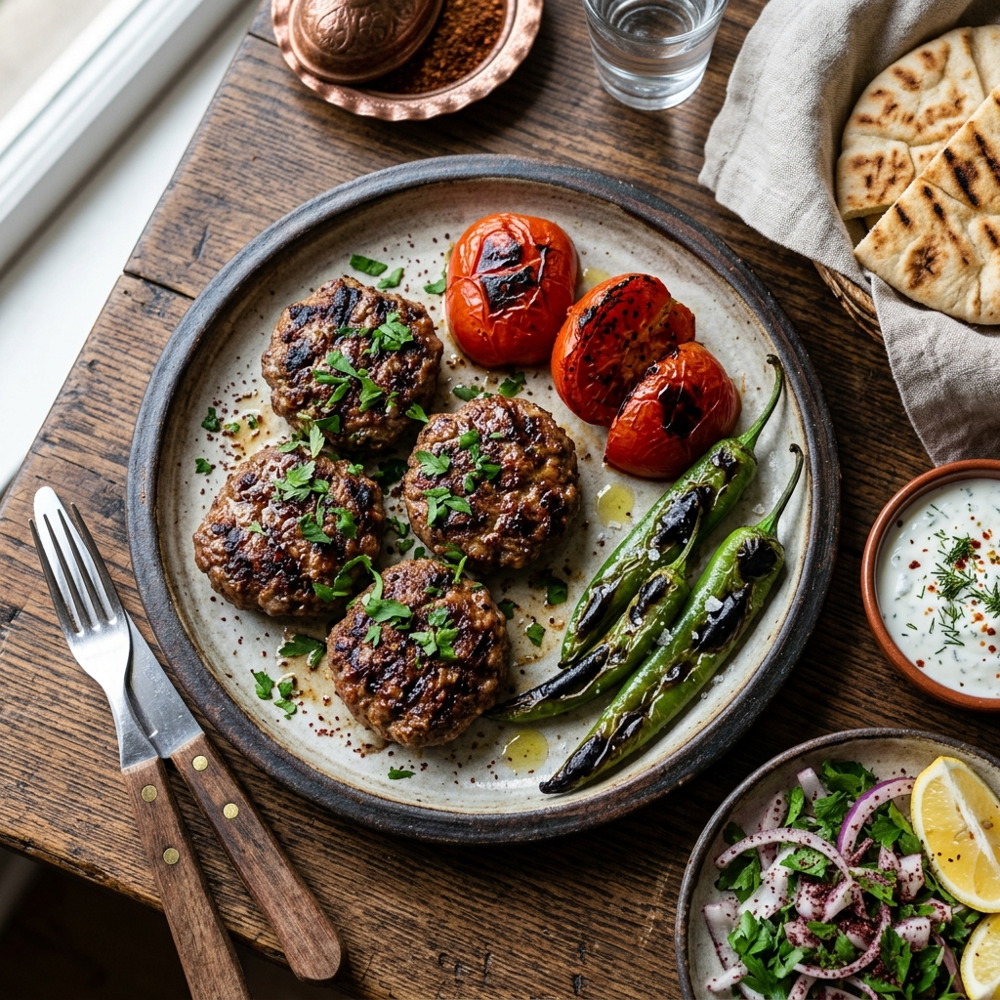
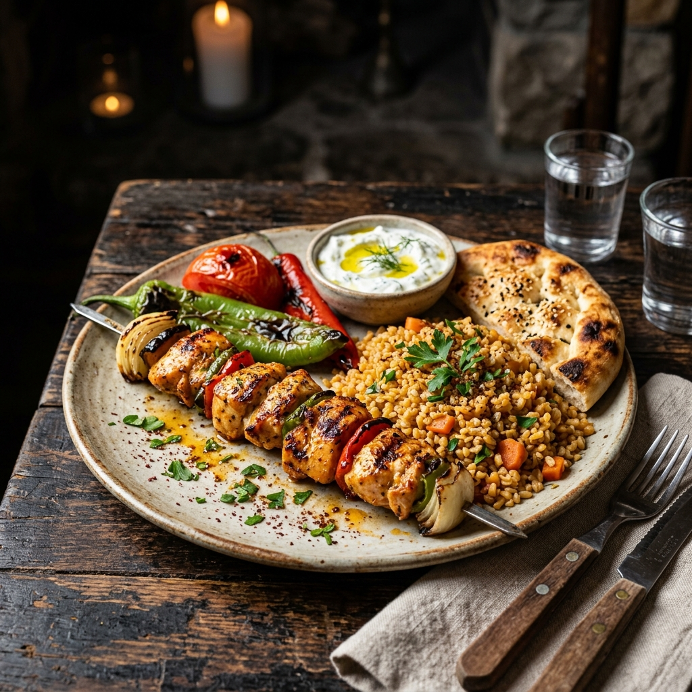
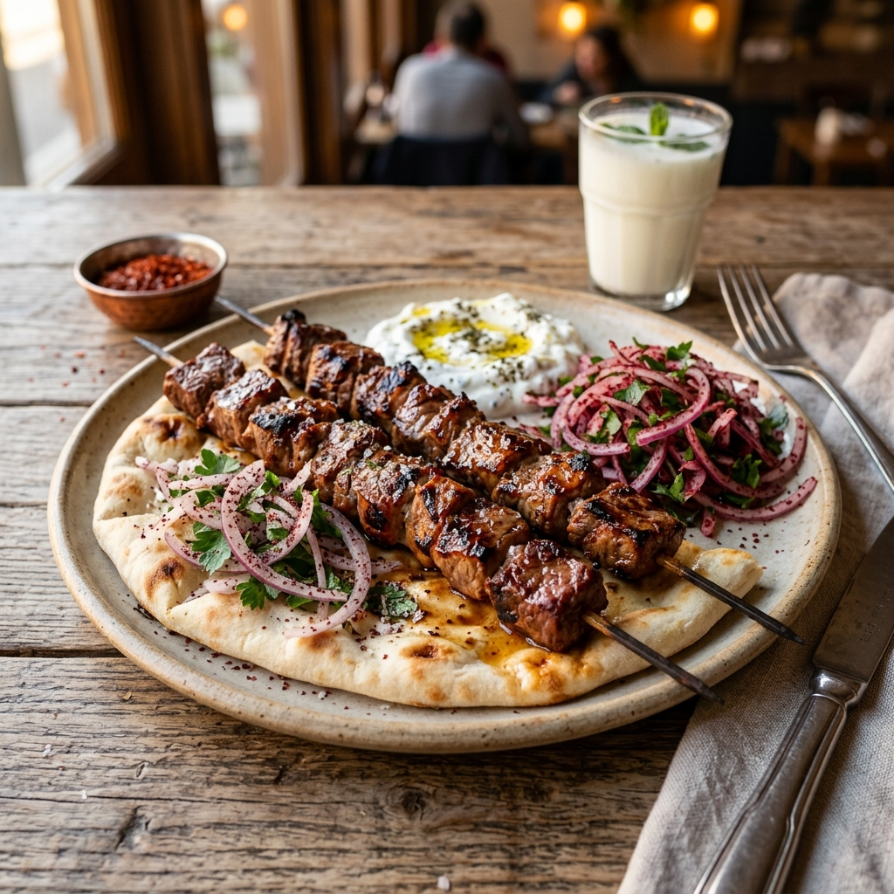
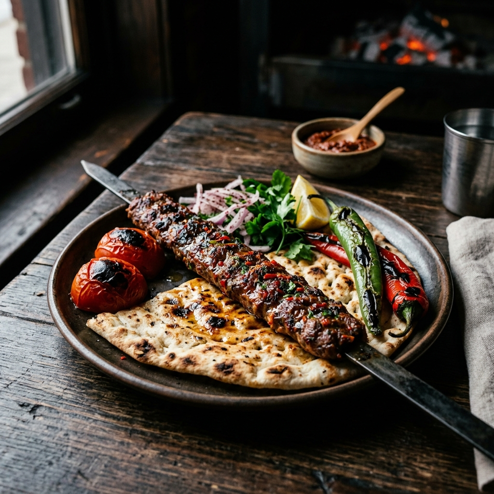
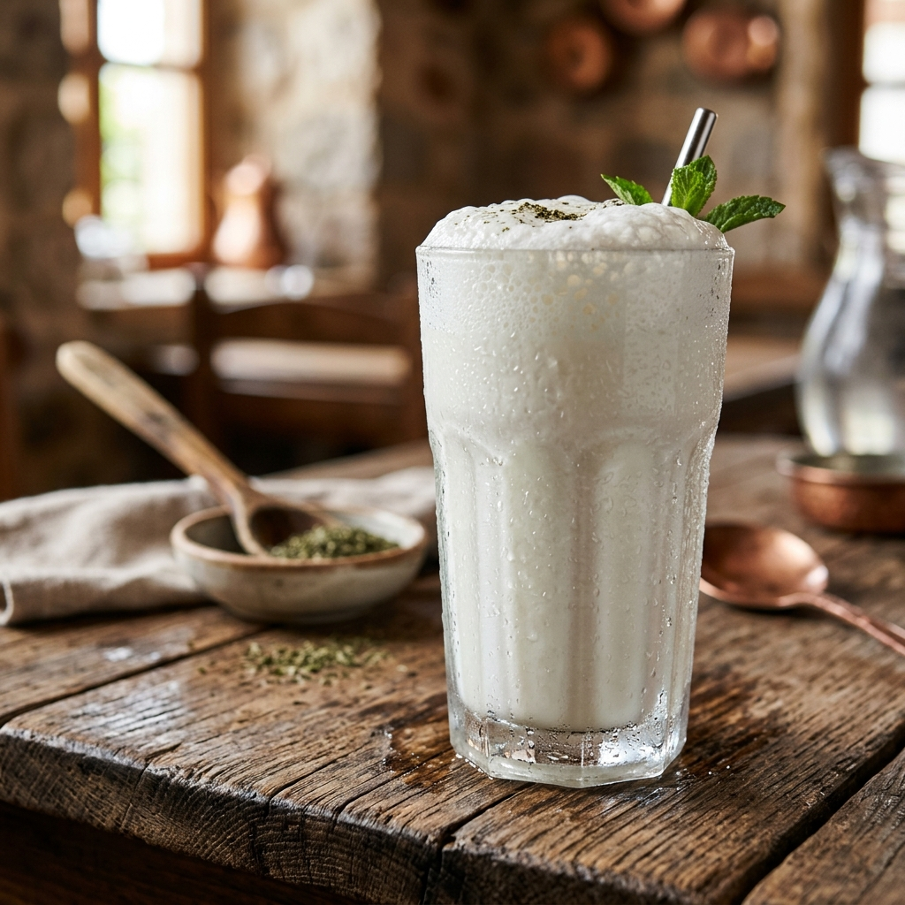
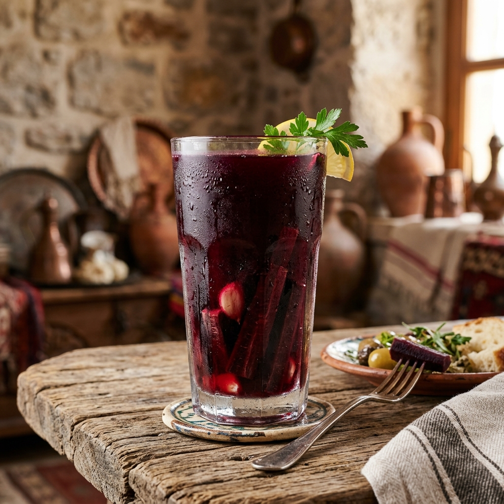
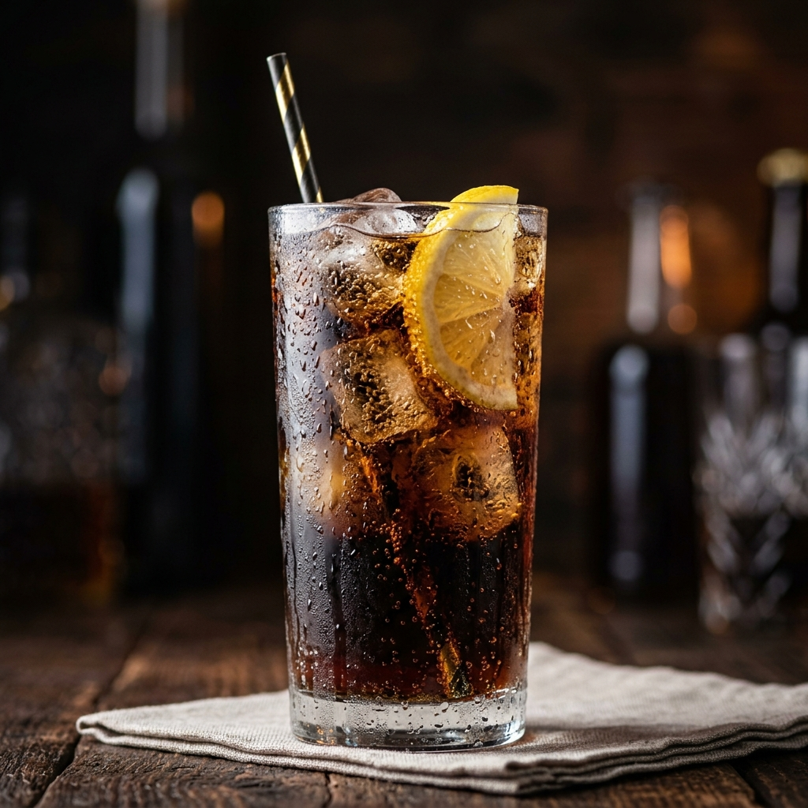

Özel baharat karışımımızla marine edilmiş, kömür ateşinde ağır ağır pişmiş çıtır kanatlar. Yanında taze patates kızartması ile.

Geleneksel tarifimize sadık kalarak, %100 dana etinden hazırlanan sulu ve lezzetli ızgara köfteler.
Tavuk şiş, köfte ve kuzu şişten oluşan, ızgara severler için doyurucu özel lezzet tabağı.

Özenle marine edilmiş, lokum kıvamında tavuk göğsü parçalarının mangalda eşsiz buluşması.

Taptaze kuzu etinin, usta ellerde terbiye edilip odun ateşinde mühürlenmesiyle hazırlanan nefis lezzet.

Zırhta çekilmiş acılı dana ve kuzu eti karışımından, ustalıkla şişe saplanıp pişirilen klasik kebap.

Doğal yoğurttan günlük olarak hazırlanan, buz gibi ferahlatıcı açık ayran.

Etin ve kebabın vazgeçilmezi, acılı veya acısız seçenekleriyle orijinal şalgam.

Kola, Fanta, Sprite, Ice Tea ve meyve suyu çeşitleri.